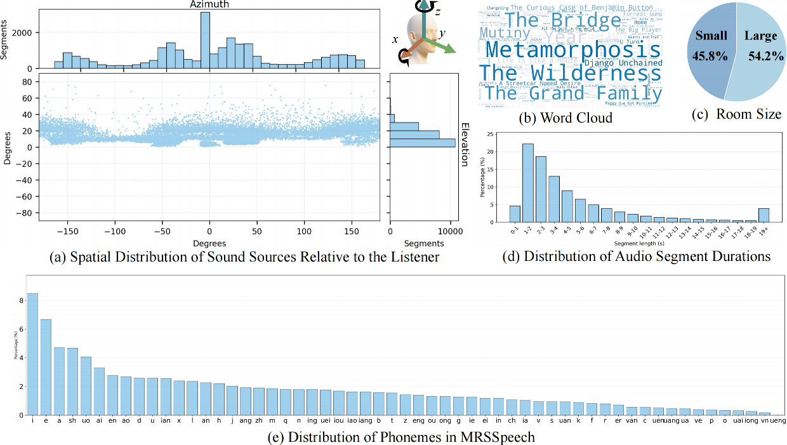

The dataset comprises four real-world scenarios: MRSSpeech, MRSSing, MRSMusic and MRSLife each with multimodal annotations for spatial audio research
Please wear headphones to listen.
Demo
Statistics

The dataset comprises four real-world scenarios: MRSSpeech, MRSSing, MRSMusic and MRSLife each with multimodal annotations for spatial audio research
code
data
Please wear headphones to listen.